RibbonRenderer
About Ribbon Display¶
A protein-specific renderer that represents the main chain of proteins and polypeptides in ribbon form using spline curves.
It has the functionality to display:
- Helices as ribbons
- Sheets as plates
- Coils as tubes
Various properties are available, making it possible to change and adjust the display.
For proper ribbon display, secondary structure must be assigned to the protein molecule. Secondary structure is usually assigned automatically when reading files, so there's no particular need to worry about it. However, if you want to change it as desired or manually reassign it, refer to cuemol2/Prot2ndryStr.
Also, when creating a ribbon renderer for non-protein chain polymers such as RNA and DNA, it simply becomes a tube-like display similar to the tube renderer.
Changing Display with Simple Style Specification¶
Simple style specification allows you to easily configure commonly used ribbon display settings.
For the concept of styles, refer to cuemol2/Style.
In the Scene panel, right-click on the ribbon renderer to display the context menu, and when you select style, a list of simple styles is displayed as a menu. When you select a menu item, the style is applied to the corresponding ribbon renderer and the display changes.
- Default
- Default ribbon display settings. Coils are thick tubes, and helices and sheets are plate-like ribbons with square cross-sections. (left figure below)
- Fancy1
- Molscript-style ribbon display settings. The inside of helices and the sides of sheets are painted in whitish colors. The cross-section of helices becomes dumbbell-shaped. (center figure below)
- Round
- Coils are thin tubes, and helices and sheets are round ribbons with elliptical cross-sections. (right figure below)


Detailed Settings by Properties¶
The following explains the main properties and their setting GUI.
Common Settings (Common Tab)¶
- Section detail
- Specifies the number of polygon divisions in the cross-sectional direction. Larger values result in finer divisions and better display quality, but drawing speed decreases.
- Axial detail
- Specifies the number of polygon divisions in the chain direction. Larger values result in finer divisions and better display quality, but drawing speed decreases.
- Smooth color
- When colors differ between adjacent residues, if ON, the coloring between residues becomes gradated (left figure below). If OFF, the color changes at the center (right figure below).

- Pivot atom name
- Specifies the name of the atom through which the ribbon or tube should pass. For proteins, the default is CA (Cα carbon atom), and usually doesn't need to be changed.
- Start/End type
- Specifies the shape of the terminals. Specifying sphere makes them spherical (left figure below), flat makes them flat (center figure below). Specifying none means terminal polygons are not generated, resulting in hole-like openings (right figure below).


{kind=link}
{kind=link}
{kind=link}
Also, Basic settings and Edge lines are common setting items found in other renderers. For Edge lines, refer to cuemol2/EdgeLines#rend_props.
Helix Settings (Helix Tab)¶
Helix Section¶
Settings related to the shape of the cross-section of helix portions.
- Type
- Specifies the type of cross-sectional shape.
From left in the figure below: Elliptical (elliptical), Rectangle (square), Round rectangle (rounded square), Fancy (dumbbell-shaped)
 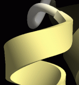
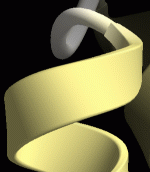
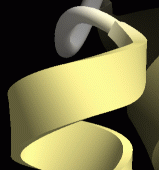
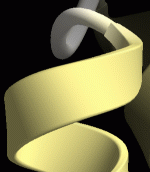

- Back color
- You can specify and change the color of the inside of helices as shown in the figure below. If Off, no color is specified and both inside and outside are the same color. Default is off.

- Width
- Specifies the thickness of helices. Unit is Å.
- Tuber
- Specifies the width of helices. Specified as a multiple of Width.
- Sharpness
- Meaning differs depending on Type.
When Type=Round rectangle: Specifies how rounded the corners of the rectangle are. Setting to 1 results in a nearly angular shape, but closer to 0 gives a more rounded shape.
When Type=Fancy: Specifies the size of the circles at both ends of the dumbbell shape. Values close to 0 make the thickness thinner and create a more pronounced edge shape (left figure below; value=0), but approaching 0.5 gives a shape closer to Round rect (center figure below; value=0.5). Values above 0.5 result in a shape like the right figure below (value=0.75) (difficult to explain).
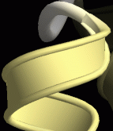 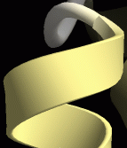
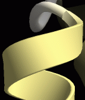 - Smoothness
- At 0, helices become curves that pass through the positions of pivot atoms (default is Cα atoms), but below that, they become smoother curves that don't pass through pivot atoms. (Strictly speaking, this setting is not related to cross-sectional shape, but is included here for convenience)
{kind=link}
{kind=link}
{kind=link}
{kind=link}
Helix Head¶
Settings related to the shape of the helix termination (head) portion.
- Type
- Type of shape.
Specify Round (smooth connection; left figure below), Flat (discontinuous; center figure below), Arrow (arrow-shaped; right figure below)
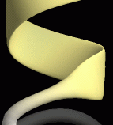

It would be rare to make the terminal of a helix arrow-shaped.
For Arrow-related settings, refer to the later "Sheet Settings (Sheet Tab)". - Power
- Specifies the smoothness of connection.
The figure below shows changes when Type is round and values are changed to 1, 1.5, 3 (for round, specifying values of 1 or less is meaningless).
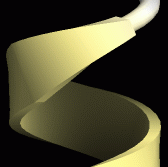 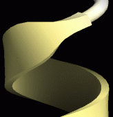
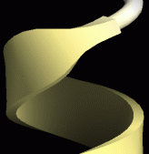 - Arrow height
- Only effective when Type is arrow. Specifies the height of the Arrow. Refer to the later "Sheet Settings (Sheet Tab)".
- Arrow width
- Only effective when Type is arrow. Specifies the width of the Arrow. Refer to the later "Sheet Settings (Sheet Tab)".
{kind=link}
{kind=link}
{kind=link}
Helix Tail¶
Settings related to the shape of the helix start (tail) portion.
The content is exactly the same as Helix Head, but is applied to the start portion of helices.
Sheet Settings (Sheet Tab)¶
There are similar setting items to those for helix settings. The meaning of each setting is mostly the same as for helices, so refer to the previous section "Helix Settings".
The following explains only settings that have different meanings for sheets or settings that require attention.
- Back color
- For sheets, not the back surface color, but the side surface color changes to the specified color.

- Smoothness
- For sheets, 0 causes too much undulation, so the default is 0.5 (resulting in extended β-sheets). However, when displaying side chains, etc., 0.5 makes side chains appear to float, so it's better to change to 0.
 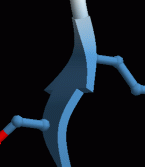
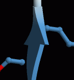
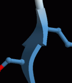
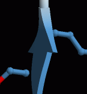 - Arrow settings
- Setting Type in SheetHead settings to Arrow makes the tip of β-sheets arrow-shaped (it would be rare to make SheetTail (terminal) arrow-shaped).
In this case, the Power value in SheetHead settings affects the sharpness of the arrow tip. The right figure below is 0.5, center is 1, left is 2.

- Arrow width
- Specifies the width of the arrow tip portion (see figure below). At 100%, the arrow width becomes three times the width of the sheet body, and at 0%, the width becomes the same as the sheet body width (= no arrow tip portion).
- Arrow height
- Specifies the height of the arrow tip portion (see figure below). Decreasing the value decreases the height of the arrow tip portion.
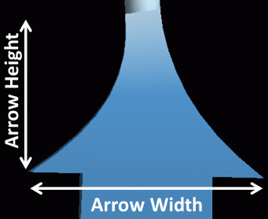
{kind=link}
{kind=link}
{kind=link}
{kind=link}
{kind=link}
Coil Settings (Coil Tab)¶
Since coil portions don't have the concept of Head/Tail, there are only setting items related to Section (cross-sectional shape). The meaning of each setting is the same as for helices. Refer to the Section portion of the previous section "Helix Settings".